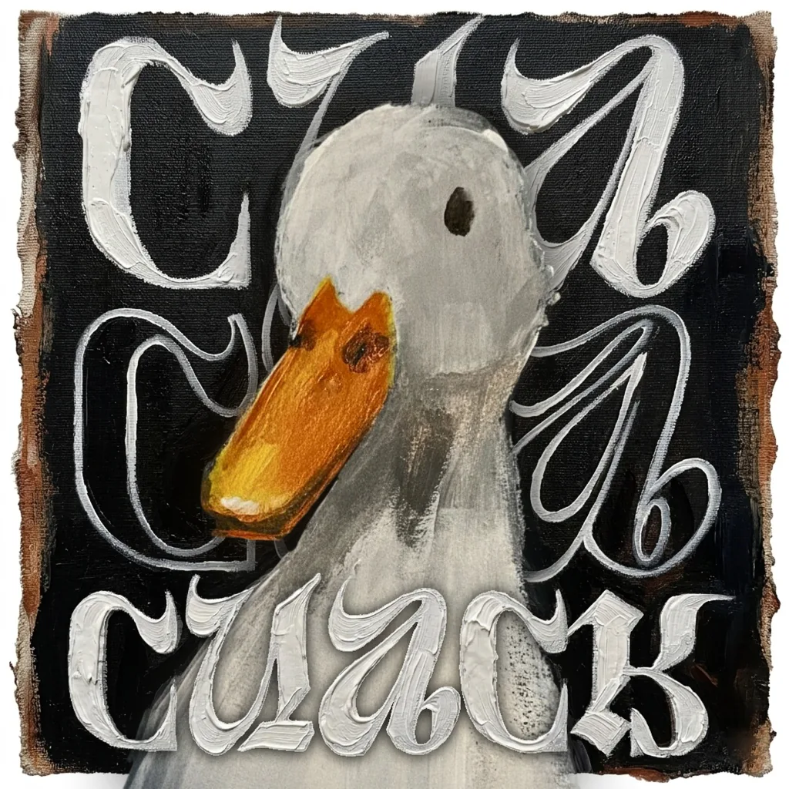
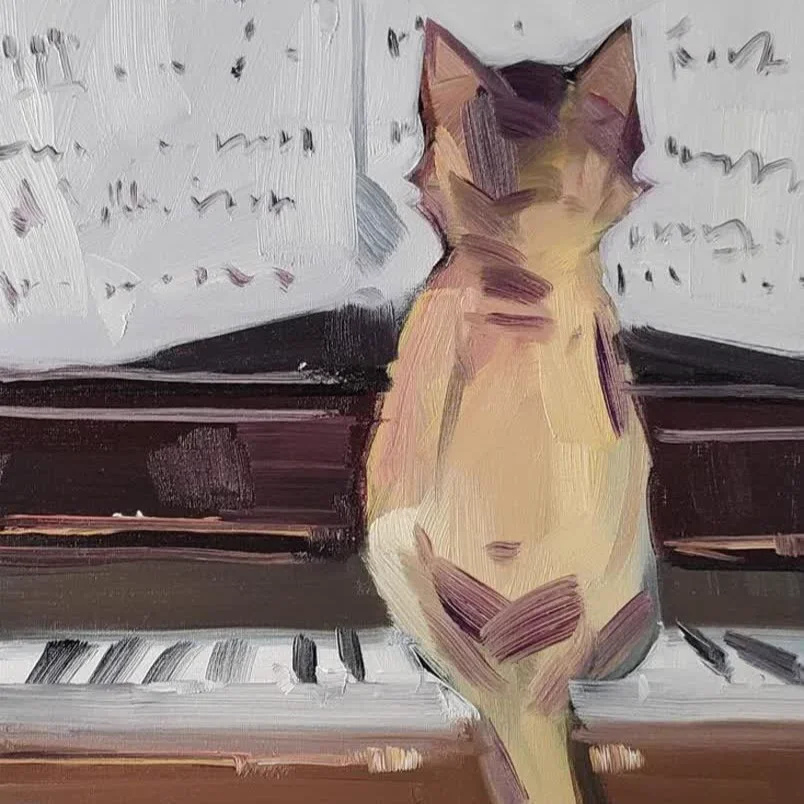
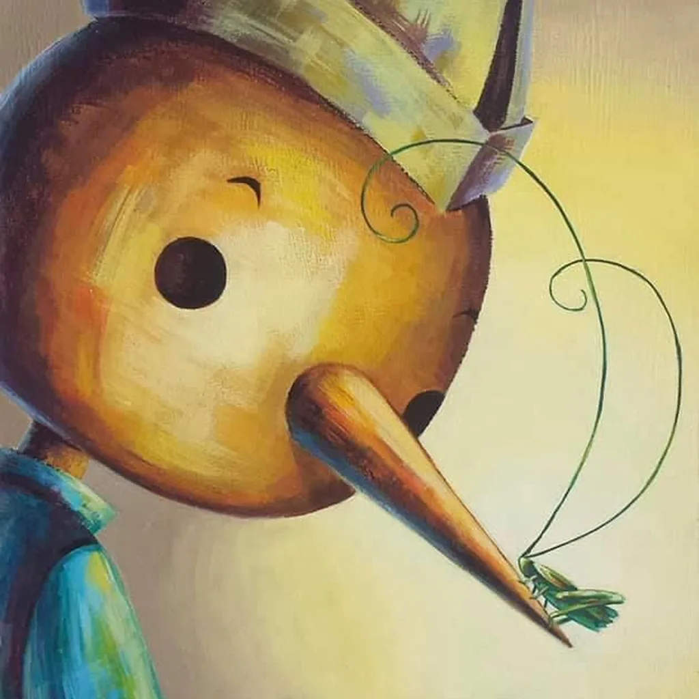
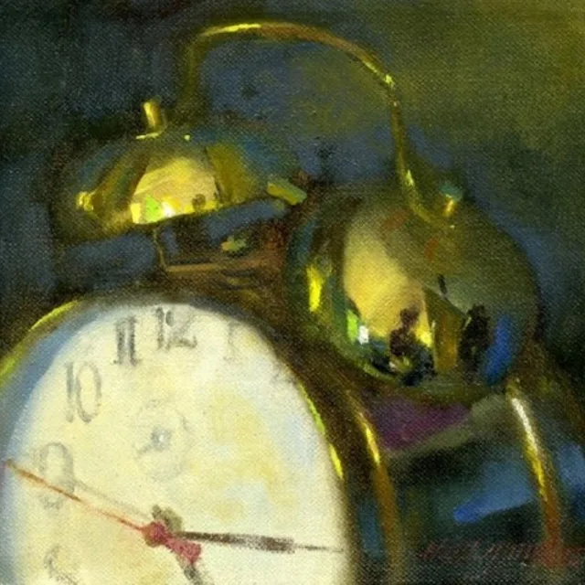
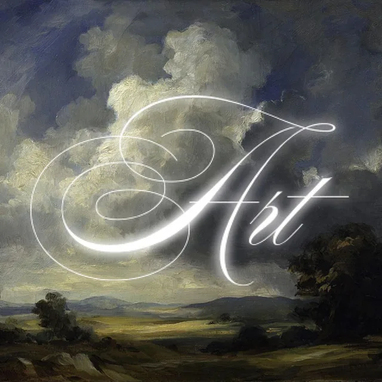

jxan
Quién es jxan
jxan es un artista y productor de música. Publica sus canciones en Spotify, Apple Music, YouTube y SoundCloud, y también hace sample type beats y jerk. Esta es la web oficial de jxan: jxan.art.
En redes, jxan aparece como jxannt: youtube.com/@jxannt y soundcloud.com/jxannt.
Discografía de jxan

cuacuacuack EP de jxan, muy pronto
1/2 Single de jxan, 2026, en SoundCloud
lo k inventas (ft. fastorr) Single de jxan, 2026, en SoundCloud
espérate Single de jxan, 2026, en Spotify
ART Single de jxan, 2026, en Spotify
Preguntas sobre jxan
¿Dónde puedo escuchar a jxan?
En Spotify, Apple Music, YouTube y SoundCloud. Todos los lanzamientos están enlazados en esta página.
¿Cuál es el próximo lanzamiento de jxan?
El EP cuacuacuack, que sale muy pronto.
About jxan
jxan is a music artist and producer who also makes sample type beats and jerk. This is the official website of jxan. Listen on Spotify, Apple Music, YouTube and SoundCloud.